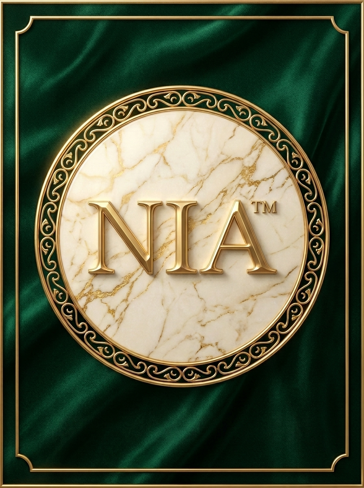

"
Two weeks in and my skin looks like it just woke up. The texture, the glow — it's all there. Quietly addictive.
A
Aanya R.
Kathmandu · verified buyer

A 20% Vitamin C face serum, cold-pressed from real citrus and sealed against oxidation — for clear complexion and improved skin texture, drop after drop.
Pharmaceutical-grade L-Ascorbic Acid in its most potent stable form — engineered to deliver radiance without irritation.
Whole oranges, pressed at low temperature to preserve every active bioflavonoid. No heat. No shortcuts. Just the fruit.
Amber glass and nitrogen-flushed at fill — so the Vitamin C you apply is as fresh as the day it was made.
Diminished dullness in 14 days. A more even, refined tone in 28. Skin that looks awake — and stays that way.
We treat the formula like an instrument — measured, recorded, and verified against a single benchmark: skin that visibly glows.
Step out of the science of the serum and into the air-pumped, sulphate-free cleanser that earns it. One pump. Sixty seconds. A whole new step.
A patented air-pump dispenser whips the formula into pillow-soft foam at the moment of release — no wasted product, no harsh rubbing.
Ethyl Ascorbic Acid suspended in a sulphate-free wash — bright enough to lift dullness, gentle enough for daily use, morning and night.
Coconut-derived surfactants lift makeup, sunscreen and city pollution without stripping your skin barrier. pH 5.5 — the same as healthy skin.
One pump. Massage in circles. Rinse. The first step of the Nia ritual — designed to prep your skin for the Vit-C serum that follows.
Nia Vitamin-C Foaming Face Wash. A daily cleanser engineered around two ideas — leave the skin barrier intact, and leave the skin visibly brighter.
Everything packed into 20ml of cold-pressed clarity — concentrated, stabilised, and clinically thoughtful.
Every ingredient earns its place — clinically dosed, sensorially balanced, and made to disappear into your routine.
Highly potent L-Ascorbic Acid that doesn't oxidise on contact with skin — for genuine, sustained brightening.
Real orange-derived bioflavonoids pressed at low temperature — the antioxidant ecosystem the skin actually recognises.
Multi-weight hyaluronic acid plumps the surface and seals every drop of radiance into the skin barrier.
Refines pore appearance, evens tone, calms redness — the steady multitasker behind every great morning skin.
UV-blocking pharmaceutical glass shields every active from light and air — preserving the formula until last drop.
Pharmaceutical-grade formulation in Bangalore. Curated, sealed, and shipped from Kathmandu — vegan, cruelty-free, made to be worn every day.
The most potent, clinically-validated form of Vitamin C. L-AA directly inhibits melanin synthesis, neutralises free radicals, and stimulates collagen — the trio responsible for visible brightness.
We stabilise it at pH 3.5 (the optimal absorption window) and seal it under nitrogen to keep oxidation at bay. Yellowing serum? Not on our watch.
Real orange-derived bioflavonoids extend Vitamin C's half-life and amplify its antioxidant power — the synergy your skin recognises because it's how the molecule exists in nature.
Pressed at 4 °C within 24 hours of harvest from Nagpur and Coorg oranges. Heat-extracted alternatives lose 60% of activity. We don't compromise.
Three molecular weights of HA work at three depths: large molecules plump the surface, mid-weight smooths fine lines, low-weight penetrates and signals long-term hydration repair.
This is the layer that makes high-dose Vitamin C feel cushioned, never tight.
The steady multitasker. Refines pore appearance, evens tone, calms redness, and reinforces the skin barrier — letting the other actives do their work without irritation.
Stable across the full pH range, so it plays nicely with our acidic Vitamin C system.
The unsung hero of every great Vitamin C serum. Ferulic acid stabilises L-AA, doubling its photoprotection and extending shelf life by months.
If you've used a Vitamin C product that turned brown in a week — it didn't have ferulic. Ours does.
Ultra-light, non-comedogenic emollient. Mimics your skin's own sebum, locks in everything above it, and gives the formula its silky, never-greasy finish.
Sourced from sugarcane fermentation — never shark liver. Vegan, sustainable, and identical at the molecular level.
Drag the slider to see what 28 days of one ritual does to skin tone, texture and luminosity. Same person. Same lighting. Same time of day.
Self-reported · 28-day study · 124 participants · Across Nepal
Two years ago I went looking for an honest Vitamin C serum in Kathmandu. What I found was either imported, oxidised, and overpriced, or local and under-formulated. So I started researching what an actually-good serum looks like — and quickly fell down the rabbit hole.
20% L-Ascorbic Acid. Pharmaceutical glass. Nitrogen-flushed. Cold-pressed citrus from Nagpur and Coorg orchards. The list of "what makes a real Vitamin C serum work" is short, and we don't cut a single corner on it.
Nia is a small team — three of us, working between a clean lab in Bangalore (where every batch is formulated and sealed) and our office in Kathmandu (where every order goes out). The same hands touch every bottle. No marketing budget — what you're reading is it.
If the serum works for you, tell a friend. If it doesn't, write to me — hello@niacosmetic.in. That promise is real, and I read every email.
Two weeks in and my skin looks like it just woke up. The texture, the glow — it's all there. Quietly addictive.
It feels like a luxury serum, smells like a fresh orange grove, and the price is honest. Rare combination, this.
I tried this expecting another vitamin C serum. I'm on my third bottle. So is my mother. It quietly does what it claims.
My pigmentation is fading. Slowly, then all at once. I haven't switched serums in six months — and that's a first.
Lightweight, never sticky, and doesn't smell like a chemistry lab. Sits beautifully under sunscreen and makeup.
A million-bubble lather. Sulphate-free, pH 5.5, with 5% stabilised Vitamin C — the brightening first step.
Pharmaceutical-grade L-Ascorbic Acid, cold-pressed citrus, nitrogen-flushed amber glass. The brightening core of the ritual.
A featherlight humectant veil designed to seal the serum and re-hydrate throughout the day. Shipping later this year.
A weightless mineral sunscreen that finishes the ritual — non-whitening, citrus-clean, and friendly to Vit-C from the steps above.
For most people, no. We pH-balance the formula at 3.5 and pair the L-AA with niacinamide, hyaluronic acid, and squalane to cushion delivery — so the strength feels gentle.
That said, if you've never used Vitamin C before, start with 2 drops every other morning for the first week. Skin builds tolerance fast.
Day 14: a more awake, less dull complexion — the "lit from within" look.
Day 28: measurable evening of tone and softer texture. Pigmentation visibly retreats by week 6 with consistent daily use.
Results compound — keep going, don't skip.
Yes — but split them across the day. Use Nia Vit-C Serum in the morning under sunscreen. Use retinol or AHAs at night.
Layering Vitamin C with active acids in the same routine isn't dangerous, but it dilutes the effect of both. Splitting them gives each its full window to work.
We ship across Nepal with free delivery on orders over ₹999, and to India, Bhutan, and Bangladesh at flat international rates.
Orders typically arrive in 2–4 days within Nepal, 7–10 days for cross-border. Bottles are sealed and packed in Bangalore, then shipped from our Kathmandu fulfilment hub.
Send the bottle back within 30 days, used or unused, and we'll refund the full purchase price. No questionnaire, no restocking fee.
Genuinely. We'd rather refund a customer than have the wrong bottle on someone's shelf.
Yes — every ingredient and every step. No animal testing at any stage of formulation, ingredient sourcing, or production. No animal-derived ingredients — our squalane is sugarcane-fermented, not shark-derived.
Certified by Leaping Bunny and The Vegan Society.
Cool, dry, dark — a bathroom cabinet or bedside drawer is perfect. Avoid direct sunlight and prolonged heat (above 25°C).
Our amber glass + nitrogen-flushed fill protects the formula for the full 90-day window after opening. A faint orange tint is normal; if it goes brown, it's oxidised — message us, we'll replace it.
Begin the 28-day journey. One bottle. Two drops, every morning. A clearer, brighter, more even complexion — visibly.
Order Nia Vit-C Serum →